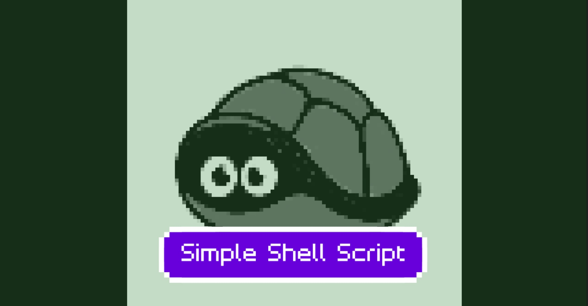

Skills/Tools C/Git Private Repository
This program, sshell, is a simple version of a real-life UNIX shell such as bash and zsh. Supported features include executing commands with optional arguments, redirection of standard output and standard error, and pipelining with up to 3 pipelines.
This program is made up of 3 main parts, which can be split into further subparts:
Because whitespace around redirection and pipeline symbols do not matter and the entire command line input is given as a single string, the command line input must be parsed.
After receiving the command line input, the shell parses the input by iterating through each letter by using the function parseCmdLine and helper functions storeRedirect and storePipe. Separate tokens are generated, which represent either the command or argument(s), based on the following delimiters: >, |, &, and white space . These tokens, along with the redirection and pipeline symbols with the help of storeRedirect and storePipe, are stored consecutively in the order they were inputted in char* args[ARGS_MAX+1], whose memory indexes are allocated using malloc().
The function analyzeArgs is called to analyze the inputs by iterating through args with index i. This function counts the number of pipes and also determines whether standard output or standard error needs to be redirected. If they need to be redirected, the next input, args[i+1], must be the name of the file, and is therefore opened using the function openFile. This function checks whether a file was previously opened, closes the old file, and opens the new file. Then analyzeArgs moves all values in args whose index satisfies index >= i+2 forward in the array args by 2 indices. This removes the redirection operator as well as the file name, so that args may be passed to execvp when it is time to execute the command. For example, echo hello > file.txt (null) will be truncated to echo hello (null). Finally, analyzeArgs also checks for incorrect inputs of consecutive symbols, such as >||.
Most of the error checking is done after the command line input has been parsed. Further error checking is done after analyzing the args array.
There are 3 ways that commands may be executed: pipelined commands, built-in commands, and regular commands.
There may be up to 3 pipes with 4 commands. If commands need to be pipelined (indicated by numPipes > 0), the pipeline function is called. This function creates 4 char* process[] arrays and populates them by calling getPipelineCmds. getPipelineCmds is used to separate the different phases of the pipeline by scanning args, as well as indicating if the standard error of the previous command should be redirected to the next command. For example, if args contains cat file.txt | head -9 | grep a | wc -l (null), the 4 respective process arrays will contain cat file.txt (null), head -9 (null), grep a (null), and wc -l (null). Next, pipeline will create 3 pipes by using the pipe() function. Then, for each command to be executed, fork() will be called to perform execvp() on each of the commands. The standard output and standard error redirections are handled as necessary using dup2(). After all of the fork() calls, waitpid() and WIFEXITED are used to collect the exit statuses of each command. The completion message is printed to stderr.
There are 4 built-in commands: exit, cd, pwd, and sls. exit is detected immediately after the command line is received as input and subsequently breaks out of the infinite loop, thus ending the program. The cd function uses the chdir() function to change to the newly specified directory. The pwd function uses the getcwd() function to get the name of the current directory. The sls function opens the current directory, reads and prints the name and size of its contents. These functions will return 0 on success and a non-negative integer on failure. The completion message is printed to stderr.
Regular commands are executed using the fork() + execvp() + waitpid() method, just as commands in pipelined commands are executed. Standard output and standard error are redirected if necessary using dup2(). WIFEXITED collects the exit status, and the completion message is printed to stderr.
At the beginning of each iteration of the while loop in main, memory is allocated to each index of args, the array which contains the command line inputs, by using malloc(). Before an index of the array args is set to NULL, the element of the array is freed using free(). After the commands have been executed for the current iteration of the loop, the function freeArgs is called, which iterates through args to call free() on any element of the array which has not already been freed.
This program was tested by using different commands and different combinations of commands as the code was being written. The output of this program was also checked with the output of sshell_ref. Additionally, tester.sh was used to check more test cases. Problems that were encountered were debugged with gdb.